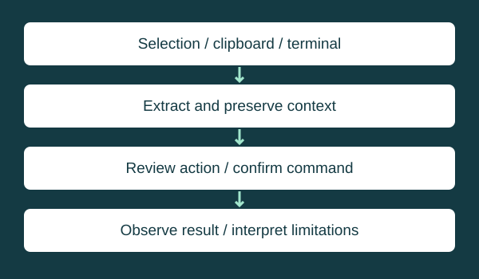
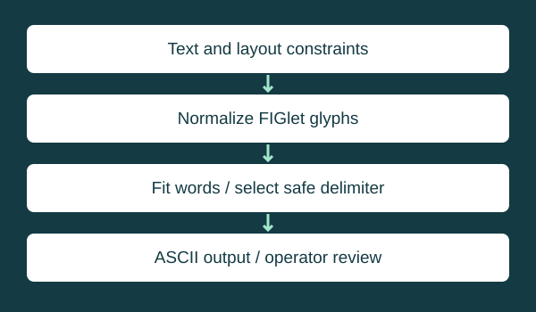
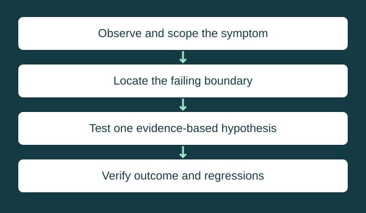

Repository-backed project
Link Neighbor
Identify the directly visible Ethernet neighbor without guessing the upstream path.
Explore the engineering →Infrastructure / Operations / Code
Connecting infrastructure knowledge with practical tools: trace the path, isolate the failure boundary, and make repeatable work easier to verify.
My focus spans routing and switching, wireless troubleshooting, network visibility, and operational scripting.
Experience areas are supplied by the author. Public projects below are supported by repository inspection. Educational scenarios and diagrams are illustrative, not workplace configurations or incident reports. No deployment scale, certification status, or measured production result is asserted.
Inspectable implementation
Link Neighbor and SecureCRT Scripts lead this collection. Source review confirms implementation details; these tools were not run against network equipment for this portfolio update.
Repository-backed project
Identify the directly visible Ethernet neighbor without guessing the upstream path.
Explore the engineering →
Repository-backed project
Turn terminal context into repeatable, operator-controlled diagnostic workflows.
Explore the engineering →
Repository-backed project
Generate predictable terminal-safe banner text with explicit layout constraints.
Explore the engineering →Technical responsibilities and troubleshooting approaches, with evidence boundaries made explicit.
Author-described experience area
Reason about forwarding paths, routing adjacencies, Layer 2 boundaries, and failure domains. Separate link state from route selection and end-to-end reachability; verify both directions before changing configuration.
Author-described experience area
Trace a client from radio association through authentication, addressing, and application access. Correlate RF conditions, controller events, and wired uplink behavior before selecting an optimization.
Public code plus author-described scope
Build focused operational tools with explicit inputs, predictable output, and a verification path. Public repositories demonstrate terminal scripting and local automation; API orchestration is a broader skill area, not a feature claimed for every tool.
Author-described experience area
Correlate infrastructure status, topology, counters, flows, and packet evidence. Check telemetry freshness and coverage before treating a dashboard as a description of current network behavior.
Author-described experience area
Separate identity verification from the access policy applied afterward. Follow the endpoint, access device, and authentication-service decision path; verify the resulting segment and permitted traffic.
Laboratory scope supplied by author
Use isolated laboratory exercises to inspect switching, host networking, Internet Connection Sharing, and discovery tools. Check the host, local link, and upstream path separately. Lab observations are not enterprise deployment evidence.
Generalized examples
Six educational case studies created for this portfolio. They contain no operational identifiers or production configurations.

Illustrative engineering scenario
Scenario: A branch has an alternate path available, but an application remains unreachable.
Verification and limits: Success would require demonstrated forward and return reachability plus the intended failover behavior; no convergence measurement is claimed here.
Illustrative engineering scenario
Scenario: A device has a live Ethernet link but cannot reach its intended network.
Verification and limits: Verification would test intended connectivity and isolation of other segments. Cisco and Extreme syntax is platform-specific; no interchangeable CLI is implied.
Illustrative engineering scenario
Scenario: A client completes association with an access point but cannot use an application.
Verification and limits: A repeatable before/after client test would verify improvement. Changing channels or transmit power without evidence can move the problem. No RF survey result is claimed.
Illustrative engineering scenario
Scenario: A dashboard shows healthy devices while a user reports intermittent failure.
Verification and limits: Telemetry should answer a specific question. Flow summaries do not replace full packet detail, and a topology view is not proof of current reachability. No monitoring deployment is reproduced.
Illustrative engineering scenario
Scenario: A management system can reach a device, but authenticated polling fails.
Verification and limits: A successful poll would verify only the tested identity, security level, and object access. Keep authentication and privacy material out of screenshots and logs. No universal algorithm support is assumed.
Illustrative engineering scenario
Scenario: Repeated manual diagnosis creates inconsistent inputs and ambiguous results.
Verification and limits: The public SecureCRT code demonstrates contextual input and confirmation. Its fixed TDR delay is not a completion detector. Future improvements could add platform-aware completion checks and fixture tests; those are proposals, not existing features.